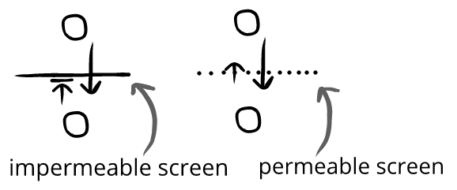

Duke Dirtfarmer is flying through the evil valley, pursued by evil spacecraft. Duke has one chance. The music swells. Trevor tenses. Duke launches his proton lancers—and they hit! The evil base is destroyed.
Duke whoops in celebration. His radio crackles with congratulations and cheers.(←Duke feels achievement and relief↔︎humor)
Trevor smiles with relief.(←Trevor feels achievement and relief↔︎humor)
Above, Trevor and Duke are synchronized—they're both feeling achievement at the same time.
Consider:
This makes it easy for us to think of Trevor's humor as humor family words, since we cue off the content of the movie.
But even when our emotional reactions are desynchronized with characters, we can still describe our humor with humor family words:
Xiaowei pirated Squeal IV, and he and Lina are watching in in the dark.
Father Daniel:*condescendingly*“Listen, Rosie. Those things you saw. They aren’t real. You know that, right?”*smiles*
Rosie:“Yes. I know that now. Thank you, father.”
Daniel:“Anything, my child.”
Rosie:*hesitates*
Daniel:“Yes?”
Rosie:“Father, maybe you can tell me something. The man who came last week.” *camera slowly zooms in on Daniel’s face* “The man in black. I need to know something. Was he...”
Daniel:“BLAHH!”*parasite bursts from head*
Lina and Xiaowei both jump.
Lina:(startled)“Fucker!”
Xiaowei:(startled)“Goddamn it!”
Rosie screams as the parasite chitters around the ground and grabs her jeans with its spiky mouth. She kicks it and runs gets into another room, slamming the door and locking the parasite in, sobbing uncontrollably.
Lina and Xiaowei giggle.(←Lina and Xiaowei feel safety↔︎humor)
Since Lina and Xiaowei don't match emotions with Rosie, we might first be tempted to describe their humor as a feeling of danger(like Rosie is feeling)—but Lina and Xiaowei are actually feeling safety!
Consider:
It's not surprising that Lina and Xiaowei might feel safety watching someone pretend to be chased by a fake alien parasite—even at the same time they'd feel danger if they were watching someone actually be chased by a real alien parasite.
We can see this same outcomes of screens and spectator orientations elsewhere:
Emma and Owen are watching Blood Soul Revenge. Guys on horses fight guys on motorcycles; guys with swords fight women with scythes; one old guy uses an abacus as his main weapon, and constantly adds up the number of guys he’s killed on it. There’s just so much great stuff!(←Emma and Owen feel generosity↔︎humor)
Zoe is reading Peace is a Gentle Mountain, and the writing is so calm and relaxing. The characters have a hard life, drawing water from wells and caring for livestock, but everything seems so beautiful and reflective. Zoe smiles lightly as she reads.(←Zoe feels comfort↔︎humor)
Sometimes we read about hard work and wonder why it feels good—but Zoe isn't actually doing hard work. She's instead feeling comfort from the book. ("The writing is so calm and relaxing.")
When we think about it, it's not surprising that reading about an experience has a different emotional outcome than actually experiencing it. They're completely different!
Consider:
We don't read about a feast and then wonder why we're still hungry. Even so, we sometimes read about something terrible and then wonder why we laugh!
In the same way reading about a feast isn't feasting, reading about something terrible isn't suffering through it.
Wink and a nod. We're sometimes surprised that so many movies advertised as "scary" aren't really scary—but we're only surprised if we're taking their advertising at face value.
So even though Squeal IV promotes itself as scary, its appeal to teenagers isn't actually scariness—it’s appeal is that it generates humor. Any scariness is just a means to an ends: of feeling safety.
We know this for all kinds of reasons. If scariness alone was appealing, then children scared to their core by adult movies would enjoy the experience—but they don’t. Similarly, if goriness alone was appealing, then adults would love watching gory war footage—but they don't.
That’s because neither scariness nor gore is the appeal of scary movies—the appeal is humor. This is why so many horror movies are campy and cliche. When humor isn't present, scariness and gore isn't appealing.
If someone doesn't feel humor from jump scares, they'd rather do almost anything than watch movies built around them. Of course, even if they'd never watch them alone, they may watch them with friends if they think the film will allow them to together have emotional experiences of connection, belonging, relief, safety, and so on.
That's the end of this chapter!
We can use emotion networks to think more about spectator entertainment:
Rosie and her friends walk through the creepy old house.
We can add separate spectators of this emotion network:
Trevor and Yasmin are watching Squeal II(←Trevor and Yasmin observe an emotion network)
Rosie and her friends walk through the creepy old house.
When Trevor and Yasmin watch Squeal II, they can receive evaluatory information from the characters, but the characters can't from them.
Trevor and Yasmin are watching Squeal II
Rosie and her friends walk through the creepy old house. They get a fright and jump, but it's just a broom falling over. Rosie laughs.(←Trevor and Yasmin can read her evaluatory information)
She wanders over to a dusty jewelry box. She pauses and bites her lip nervously.
Trevor:*frustrated*"Don't open it!"(←Rosie can't read Trevor's evaluatory information)
Above, there's a screen that filters evaluatory information. This screen is the barrier that creates these different emotion networks.
Evaluatory screens be impermeable or permeable. This is why shouting at actors in a movie has a different result than shouting at actors in a play:

Consider:
Spectator entertainment with permeable screens (like in-person performances) often gives us the feeling of including us, which makes them feel vivid and interesting. Things with permeable screens feel dynamic, and allow for reactive participation.
By contrast, spectator entertainment with impermeable screens (like remotely viewed performances) often has the feeling of excluding us, which makes them feel lifeless or grating outside of specific circumstances.
We can see all kinds of evaluatory screens:
A play has a pretend screen, where the actors receive evaluatory information but, by-and-large, carry on as if they didn't receive any
A movie or memory has as absolute screen, where the characters will never receive evaluatory information
A car window, distance, or overflow monitor is a removable screen, where we could take an action to create a two-way flow of evaluatory information
An athletic game has a concentration screen, where participants need so much focus that they can't focus on the audience
(and so on)
An evaluatory screen doesn't mean something is spectator entertainment. Something is only spectator entertainment when the priority is on one group—and there may or may not be a screen.
Consider:
If a salesman flatters us, there isn't a screen—but since the priority is us, it is spectator entertainment. Similarly, if we watch street life from our window, there is an evaluatory screen—but since the priority isn'tus, it isn't spectator entertainment.
Screens help us think about desynchronized evaluations.
Usually, desynchronized evaluations are destructive to emotion networks—groups break apart if some people laugh while others cry without any sort of movement toward evaluatory synchronization.
But when there is a screen, these desynchronized evaluations aren't immediately destructive—like when we laugh at a movie, memory, or people who can't receive our evaluatory information. The screen allows this desynchronization to happen in a context that can feel free from the normal constraints of an emotion network.
By default, we are mutually reactive to each other and try to synchronize evaluations. However, when just a few members of an emotional system are prioritized, it becomes what we're calling spectator entertainment.